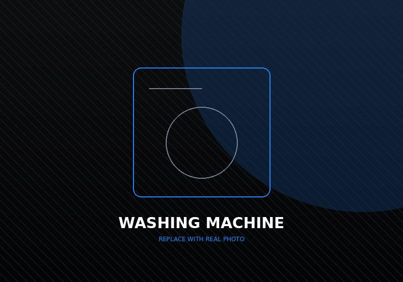
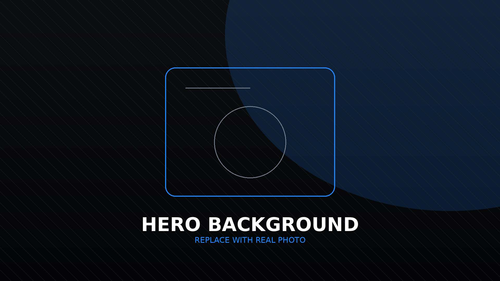
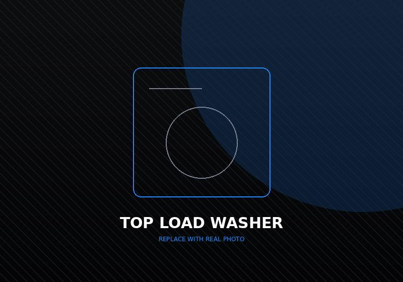
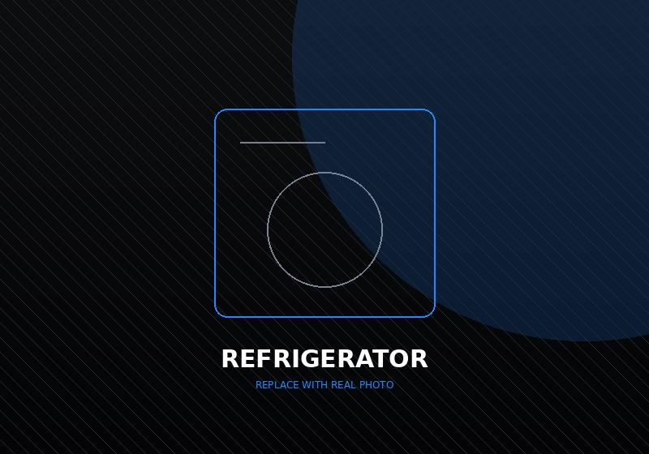
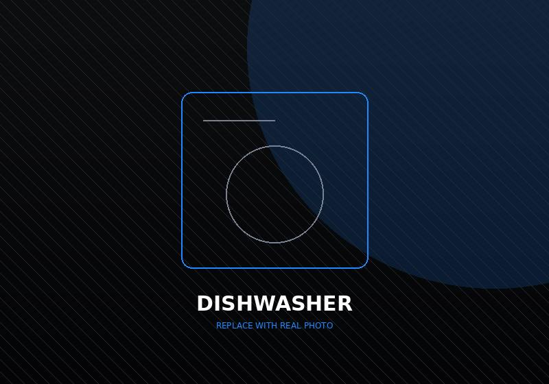
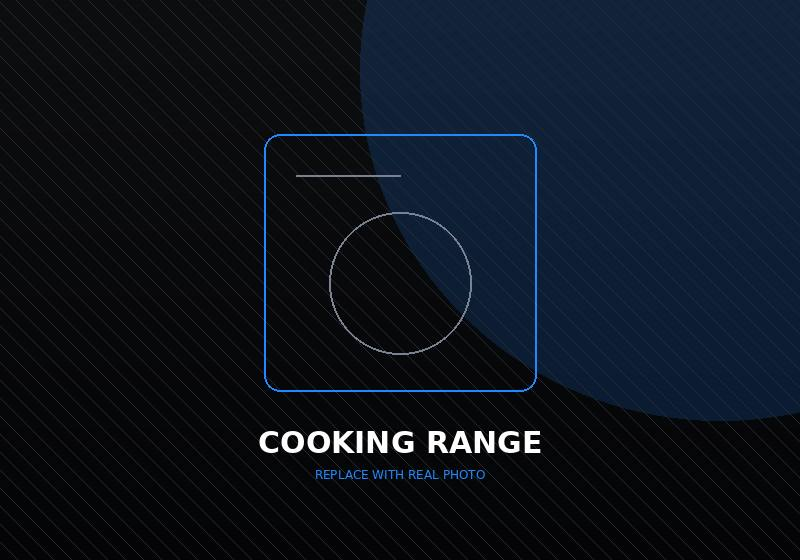
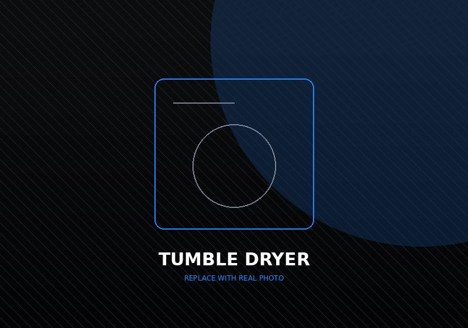

Washing Machine Repair
Drum not turning, water left in the tub, violent shaking on spin, or a door that will not release. We repair drainage, bearings, motors and control boards on front-load Samsung washers.
Washing machine repair
Genuine parts, certified technicians, same-day slots
We diagnose and repair Samsung washing machines, refrigerators, dryers, dishwashers, microwaves and cooking ranges at your home in Dubai, Abu Dhabi, Sharjah and Ajman. You approve the quote before any work starts.
Our engineers work on Samsung home appliances all day, every day, which is why a fault most repair shops need a week to trace is usually named on the first visit. We cover front-load and top-load washers, single-door through side-by-side refrigerators, condenser and heat-pump dryers, built-in and freestanding dishwashers, solo to convection microwaves, and gas or electric cooking ranges. Parts come from Samsung-approved supply, the fault and the fix are written on the invoice, and the labour is warranted for 90 days.
Seven appliance categories, one team. Pick yours to see the faults we see most, the parts we replace and the error codes we clear — or call and describe the symptom, which is usually faster.

Drum not turning, water left in the tub, violent shaking on spin, or a door that will not release. We repair drainage, bearings, motors and control boards on front-load Samsung washers.
Washing machine repair
Cycles that never finish, tubs that overfill or underfill, and the grinding spin that walks the machine across the floor. We rebalance suspension rods and replace worn clutch assemblies.
Top load repair
Fridge warm while the freezer stays cold, frost sheeting the back panel, water pooling under the salad drawer, or clicking from the compressor. We diagnose sealed systems properly.
Refrigerator repairRuns but will not heat, sparks inside the chamber, turntable stuck, or a touchpad that ignores half its buttons. Magnetron, capacitor and mica sheet replacements on solo, grill and convection models.
Microwave repair
Dishes coming out gritty or still wet, standing water in the base, detergent door that never opens, grinding from the pump. We clear circulation blockages and replace heating elements.
Dishwasher repair
Oven that will not come up to temperature, one side of the bake always paler, a gas smell on ignition, or burner elements staying cold. Igniters, bake elements and sensor calibration.
Cooking range repair
Three cycles to dry one load, a drum that hums but will not turn, a cabinet running too hot, or a start button that does nothing. Belts, thermal fuses and heating elements.
Dryer repairDescribe the symptom and we will tell you what it usually turns out to be.
View all servicesWe follow Samsung's documented repair procedure for each model rather than improvising.
Board-level diagnosis on current Samsung platforms, not just part swapping.
Samsung-approved components, with the part source written on your invoice.
Same-day slots across most of Dubai, Sharjah and Abu Dhabi, weekends included.
The faults we are called out for most, the parts behind them, and the error codes each one throws.
Front-load machines that have stopped mid-cycle, refuse to spin, or leak onto the floor.
Vertical-axis machines, where the fault is almost always agitation or suspension balance.
Cooling and frost diagnostics on single-door, double-door and side-by-side models.
Solo, grill and convection microwaves that have stopped heating or stopped powering on.
Drainage and wash-performance failures on built-in and freestanding dishwashers.
Gas and electric ranges, brought back to a temperature you can actually bake to.
Gas work is carried out to the safety procedure for the model — we will not leave a range connected if the valve or hose fails a check.
Dryers that tumble happily and still hand you damp clothes.
Same-day slots are usually available in the areas below. Elsewhere in the Emirates we book the next morning.
Call, WhatsApp or send the form. Weekend slots included.
On-time arrival and a full diagnosis, not a guess.
Parts and labour itemised. Nothing starts until you agree.
Most jobs are finished on the first visit, at your home.
We run a full cycle and test the fault before we leave.
Nine times out of ten it is drainage rather than the motor: the machine will not spin until it has emptied, so a blocked pump filter, a kinked drain hose or a failed drain pump stops the cycle silently. The other common causes are a worn door interlock (the machine will not risk spinning if it cannot confirm the door is shut) and an unbalanced load triggering a UE fault. A quick filter clean is worth trying before you call.
It depends on which part of the system has failed, so we quote after the diagnosis rather than over the phone. A thermostat, defrost heater or fan motor sits at the low end; an inverter compressor or a sealed-system gas leak is the expensive end because the work is longer and the part is dearer. You get the itemised figure before we open anything, and the call-out is waived if you go ahead with the repair.
Most visits are done in 45 to 90 minutes because the vans carry the parts that fail most often. Jobs that need a part ordered in — a specific control board, a compressor for an older model — take a second visit, normally within two to three working days. We will tell you which of the two you are looking at before we leave the first appointment.
Yes — components come from Samsung-approved supply, and the part number and source are written on your invoice so you can check it. Where a genuine part is discontinued for an older model we will say so and offer the OEM-equivalent instead, with the difference explained before you decide.
Every repair carries 90 days on our labour and on any part we supply. If the same fault comes back inside that window, the revisit is free. Note that a repair by a third party can affect a manufacturer warranty that is still running — if your appliance is still in its Samsung warranty period, tell us and we will point you to the right route first.
At home, in almost every case — including board-level work, which we do on the bench in the van. An appliance only comes to the workshop when the repair needs equipment we cannot bring to a flat, such as a sealed-system rebuild on a side-by-side refrigerator. Collection and return are arranged with you and the building in advance.
Facing an issue with your Samsung appliance?